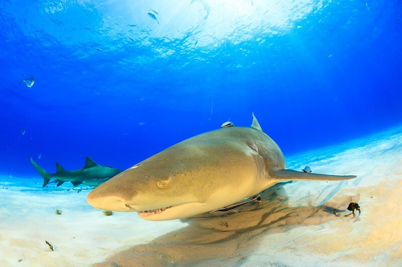
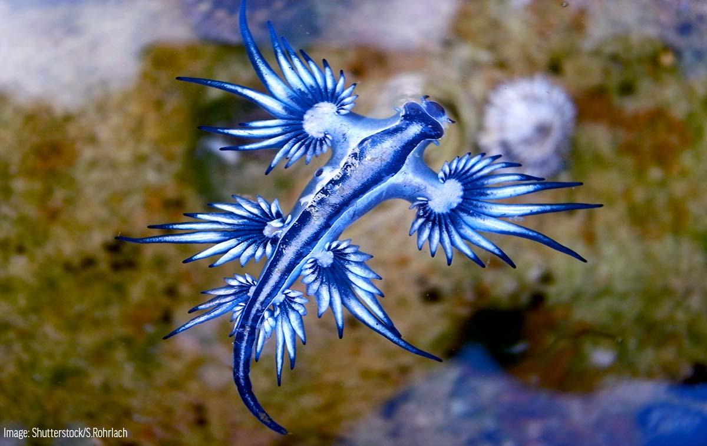
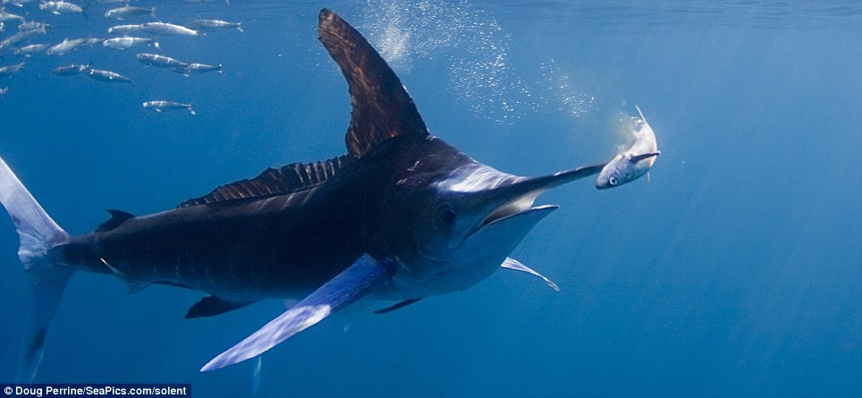
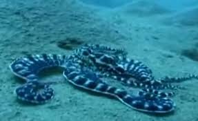
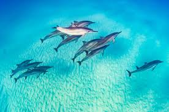

All about fish and sharks
In my life I've seen fish a few times. I've seen sharks and fish in movies and few times in real life at a aquarium.

click here for more stuff
Lemon sharks. Lemony, brown feroceous but cool.

Blue dragon it's a type of sea slug very poisonous, yet cool

Sailfish

Mimic octopus. Super cool, it mimics other marine animals. which is super awesome!
I've seen fish in aquariums and in nature. I've had an amazing encounter with dolphins. I may be 10 years old but i've always had a feeling for nature.

Dusky dolphin